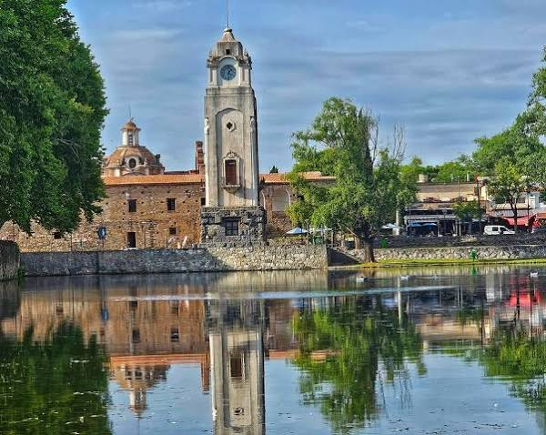
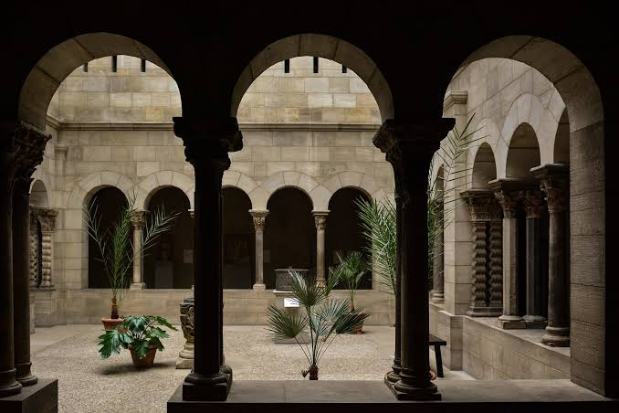

Arquitetura da Argentina
A cidade de Córdoba possui um importante patrimônio arquitetônico ligado à presença dos jesuítas durante o período colonial. Suas construções incluem igrejas, edifícios educacionais e sistemas de abastecimento de água que contribuíram para o desenvolvimento da região.
Os Aquedutos

Durante o período colonial, os jesuítas desenvolveram sistemas de condução e armazenamento de água em suas propriedades na região de Córdoba. Esses sistemas utilizavam canais, reservatórios e outras estruturas para abastecer as construções e auxiliar nas atividades agrícolas. Essas obras mostram a importância da engenharia hidráulica na época.
A Influência Jesuíta
Os jesuítas tiveram influência na na arquitetura e na educação de Córdoba. Durante os séculos XVII e XVIII, construíram igrejas, colégios e propriedades conhecidas como estâncias. Essas construções combinavam características coloniais com soluções adaptadas à região. Muitas permanecem preservadas e representam a história regional.
Patrimônio Histórico

O conjunto formado pela Manzana Jesuítica e pelas estâncias jesuíticas de Córdoba foi reconhecido como Patrimônio Mundial pela UNESCO no ano de 2000. Esses locais preservam importantes exemplos da arquitetura colonial e da presença jesuíta na Argentina. Atualmente, representam um patrimônio cultural e histórico de grande valor para o país e seus visitantes.